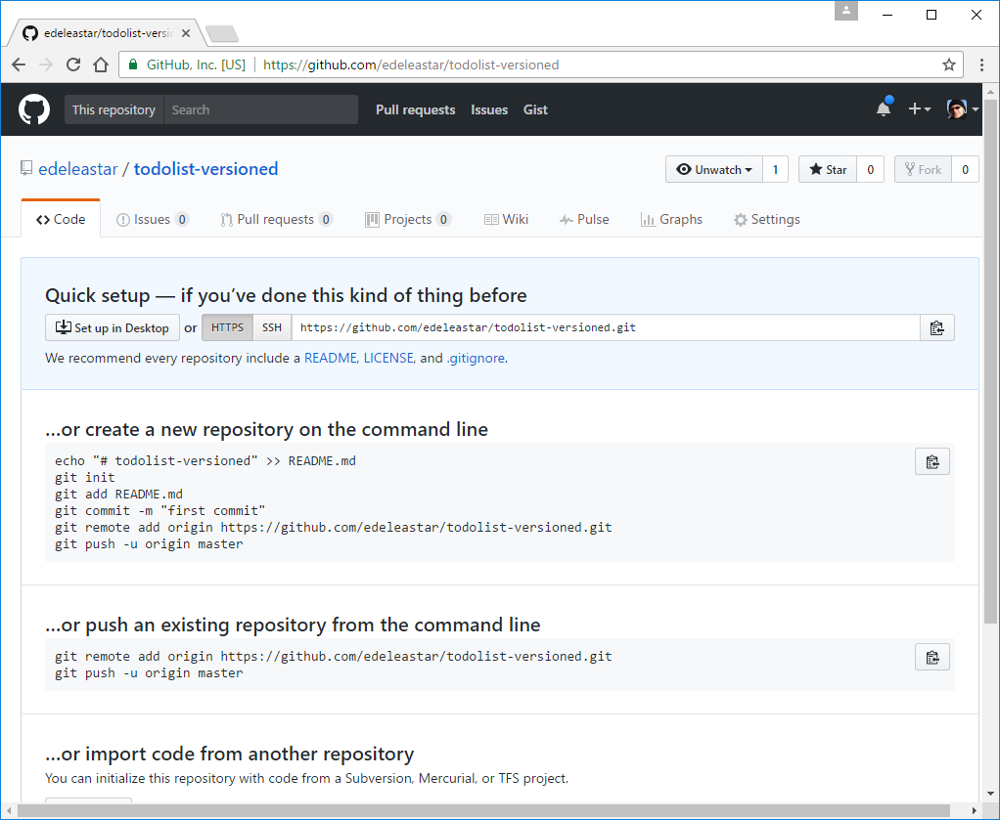
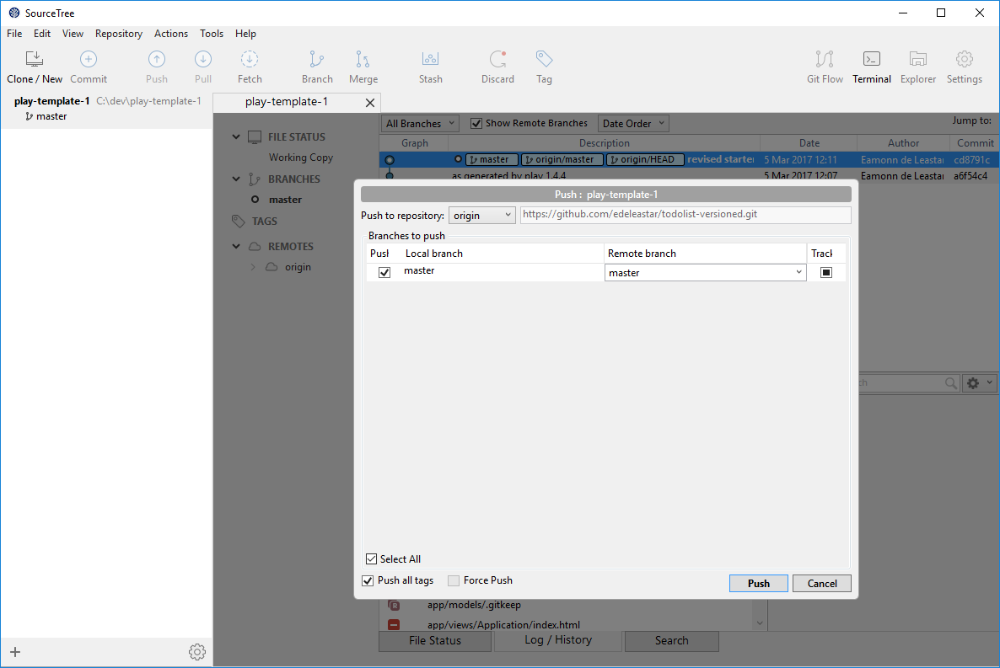
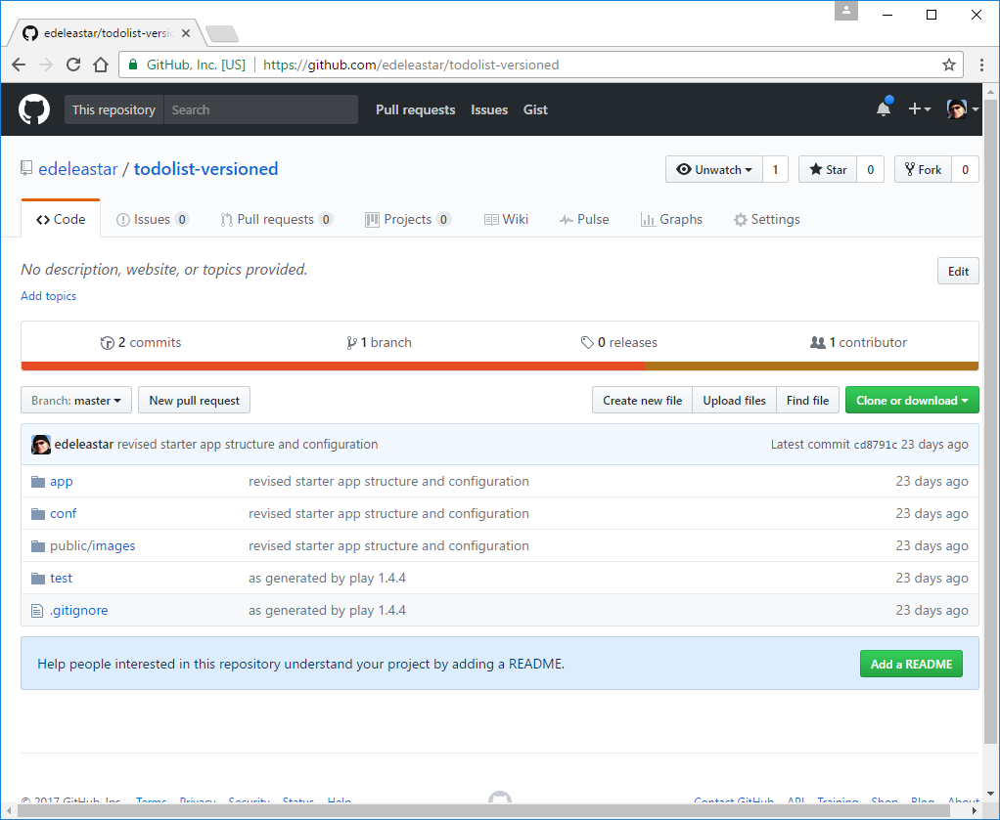

Objectives
Install and Configure Sourcetree
Git, Github & Bitbucket
Make sure git is installed for your workstation::
Verify that is is by opening a shell (command prompt on Windows) and enter the following:
git --versionThe system might respond with something like this:
git version 2.10.1 (Apple Git-78)Github
Sign up for a github account:
Be sure to verify your email.
Bitbucket
Sign up for a github account:
Be sure to verify your email.
Install Sourcetree
Visit:
And download and install the application for your platform.
On the very first screen - you will be asked to log in to Atlassian. Your bitbucket credentials should work here...
During installation you will be asked to link your sourcetree installation to github and to bitbucket
This are the first install screen you will see:

Here you will be asked to log in to an Atlassian account:

The credentials here should be the same as your bitbucket account details from the last step.

We would link to link our Sourcetree installation to both Bitbucket & Github:

Selecting each of the above will take you through an authorisation sequence with both services.
If all goes well, the Sourcetree home screen will launch:

To see if the both the bitbucket a github accounts are properly linked, select Tools->Options->Authentication :

This should show the both accounts linked as above.
Create new Repo on Github
Back on :
Create a new repository:
This will create a new empty repo on github.

Note carefully the url of the repo - in the box above. Copy this to the clipboard now.
Create New Application
We now would like to start a new play application, which we will tie to a github repo.
First, create a new app by cloning a starter app:
Create New Project
Create a new play project using this command:
git clone https://github.com/edeleastar/play-template-1.gitThe shell should show something like this:
Cloning into 'play-template-1'...
remote: Counting objects: 66, done.
remote: Compressing objects: 100% (47/47), done.
remote: Total 66 (delta 9), reused 66 (delta 9), pack-reused 0
Unpacking objects: 100% (66/66), done.Rename Project
The default name of the project should be changed now. This will require the following procedure:
- Rename the folder
play-template-1. Call the foldertodolist-versionedinstead. Use Sublime Text to edit this file:
playlist/conf/application.conf. The first three lines contains the following:# This is the main configuration file for the application. # ~~ application.name=play-template-1Change
play-template-1above totodolist-versioned, and save the file:# This is the main configuration file for the application. # ~~ application.name=todolist-versioned
Run the project -
play runand verify that the skeleton app is available:
Do nor proceed to the next step until this procedure has been completed without any errors.
Set Remote Repo
Your Sourcetree app currently looks like this:
Locate the todolist-versioned folder we just created, and drag and drop it onto SourceTree:

Select it in the navigation panel, and we have a more detailed view:

Select Repository->Settings - and you will get details of the current remote repo this repository is connected to:

Select Edit - and change URL / Path to the url you should have in the clipboard from step 3:

Push
Starting from this view:
Press the Push button:
This will bring up this screen:
When you press Push on this panel, the application will be replicated to the repo in your account on github. This might take a minute or so...
You should be able to view it on github now:

Explore the various view - including the commits screen:

Exercises
To get fluent with this procedure, try the following:
Exercise 1: Github Practice
Create another new app - called demo-1 - using the procedure specified on Step 04.
Then, Following steps 05 and 06, attach the new project to a new repo on github.
Exercise 2: Bitbucket Practice
The procedure we carried out to bind a local repo to github can also be carried out to bind a repo to a bitbucket hosted repository.
Create (another!) new project demo-2 - this time see if you can figure out how put it on bitbucket.
The main difference between github and bitbucket is that github repos are always public, whereas bitbucket can be either (default private).